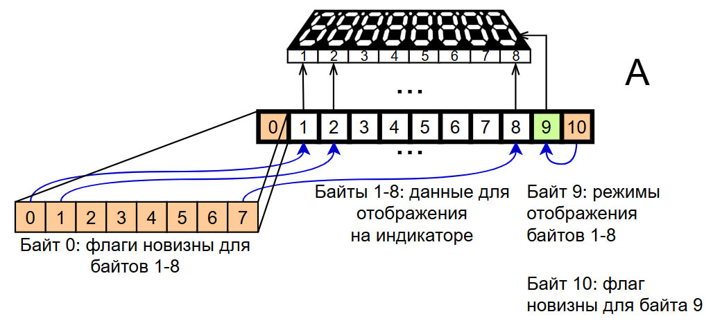
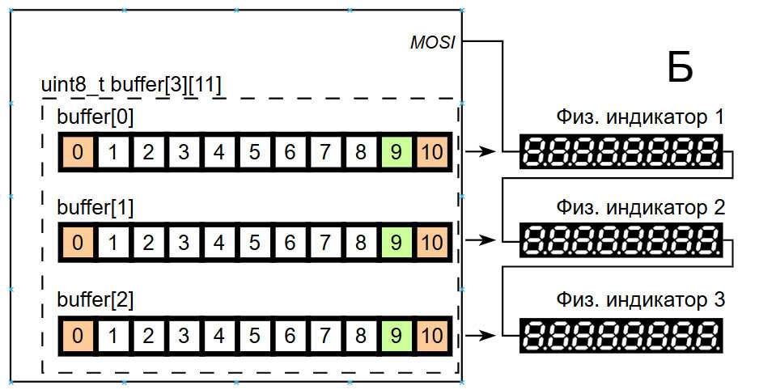
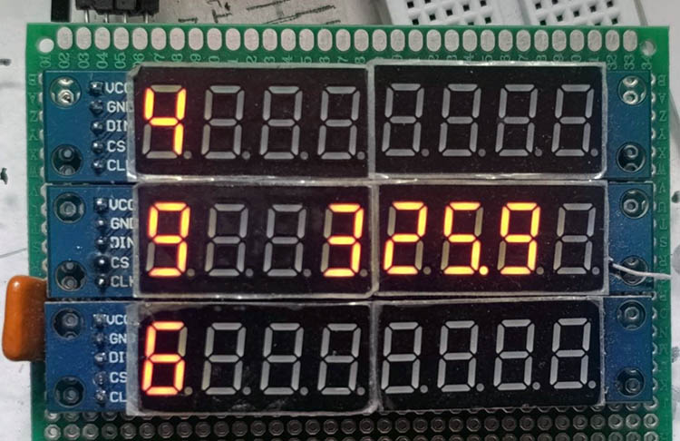

В предыдущем этюде показано, как передавать данные в конкретную MAX7219 в цепочке, содержащей несколько таких микросхем. Индивидуальное управление довольно ресурсоёмко: чтобы изменить один разряд на одном индикаторе, придётся передать по два байта в каждую микросхему в цепочке — в нужную микросхему передают актуальные данные, а во все остальные пустышку. Поэтому следует стремиться к одновременной передаче актуальных данных в разные микросхемы цепочки, если такие данные есть. Рациональным также будет отказ от передачи лишних данных. Например, если где надо на индикаторе уже горит нужная цифра, то и передавать её в MAX7219 заново не следует.
Система с несколькими MAX7219 может использоваться для отображения информации из нескольких источников, например, показаний нескольких датчиков. При этом может требоваться выбор места отображения показания на индикаторе, распределение показаний одного датчика между двумя или более физическими индикаторами (т.е. микросхемами MAX7219) и т.п.
Этюд в основном посвящён решению этих двух задач.
Написать программу, реализующую (1) рациональное управление цепочкой MAX7219, подключённой к Arduino через SPI и (2) гибкое распределение отображаемой информации по нескольким физическим индикаторам.
Такая же, как в предыдущем этюде, с тремя MAX7219 и подключёнными к ним 8-разрядными 7-сегментными светодиодными индикаторами.
Физический индикатор — множество светодиодов и управляющая ими микросхема MAX7219.
Составной индикатор — множество физических индикаторов, у которых управляющие микросхемы MAX7219 объединены в цепочку.
Разряд индикатора — совокупность светодиодов, управляемая одним регистром MAX7219.
Символ — код, определяющий комбинацию горящих и выключенных светодиодов в разряде индикатора.
Блок символов — совокупность логически связанных символов (например, число, выраженное цифрами).
Буфер составного индикатора (буфер СИ, БСИ) — структура в памяти микроконтроллера, используемая для управления составным индикатором. Содержит информационные поля с информацией для отображения и служебные поля (флаги) для управления отображением.
Флаг новизны — флаг в БСИ, указывающий на то, что соответствующее ему информационное поле БСИ было изменено.
Зона индикации — множество разрядов составного индикатора, предназначенное для отображения одного блока индикации.
Задача рационального управления цепочкой MAX7219 решена здесь с использованием буфера составного индикатора, роль которого удобно рассмотреть на следующем примере. Пусть микроконтроллер получает данные из нескольких датчиков и должен отображать их на составном индикаторе в выделенной для каждого датчика зоне индикации. Подпрограммы, обрабатывающие данные из датчиков, не передают их в физические индикаторы напрямую, а записывают в буфер, при этом выставляются признаки изменения данных в буфере — флаги новизны. Отдельная подпрограмма по команде или регулярно проверяет наличие флагов и, когда они есть, передаёт в микросхемы MAX7219 только изменившуюся часть буфера, оптимально комбинируя данные для разных физических индикаторов в один SPI-пакет. Содержимое буфера отражает текущее состояние составного индикатора, а если установлен хотя бы один флаг, то будущее состояние.
Буфер составного индикатора реализован как прямоугольная матрица байтов, в которой строк столько, сколько физических индикаторов в составном индикаторе. В каждой строке байт 0 — это 8 однобитовых флагов новизны для байтов 1-8; байты 1-8 содержат информацию, отображаемую или подлежащую отображению в разрядах 1-8 физического индикатора, соответствующего данной строке. Байт 9 содержит 8 битов, определяющих режим отображения разрядов 1-8 (0 — без декодирования, 1 — с декодированием). Весь байт 10 является флагом новизны для байта 9.


Илл. 1. А: Конфигурация строки буфера составного индикатора. Б: Буфер составного индикатора для случая трёх физических индикаторов.
Запись в буфер выполняет функция writeToBuffer: приняв байт данных, номер физического индикатора и номер регистра MAX7219, она записывает принятый байт в соответствующий элемент массива buffer и выставляет соответствующий флаг новизны. Если принятый байт совпадает с уже имеющимся в буфере, то запись в буфер не выполняется и флаг новизны не устанавливается.
Функция display() выводит изменённые и отмеченные флагом данные из буфера на индикатор. Она формирует пакеты для отправки через SPI так, чтобы в одном пакете было по одной паре адрес-данные для каждого физического индикатора, и лишь в случае отсутствия данных для какого-либо физического индикатора вместо них включает в пакет пустышку. После передачи пакета снимаются соответствующие флаги. Функция работает в цикле до тех пор, пока есть хотя бы один установленный флаг.
Подпрограммы, обрабатывающие данные из датчиков, готовят их к выводу на индикатор, для чего представляют в виде блока символов (например, массива, содержащего коды символов). Например, вольтметр может формировать блок из четырёх символов: знак и три цифры; блок, формируемый часами, может содержать шесть цифр и два дефиса: hh-mm-ss; и т.п. Область составного индикатора, предназначенную для вывода одного блока символов, назовём зоной индикации. Она может быть сплошной, например, показания вольтметра могут занимать четыре следующих подряд разряда на одном физическом индикаторе. Она может быть сплошной визуально, но не сплошной логически — символы на составном индикаторе могут соседствовать, относясь при этом к разным физическим индикаторам. Для каких-то целей может быть нужно разбросать символы одного блока по разным частям составного индикатора так, чтобы у них вообще не было общих границ, в этом случае зона индикации не будет сплошной ни визуально, ни логически. Наконец, может требоваться отображение в движущейся зоне индикации (например, бегущая строка). Поэтому нужен механизм для трансляции блока символов в произвольно задаваемую зону индикации.
Указанный механизм реализован в этой программе с использованием заранее заданной таблицы соответствия. Для описания положения символа на составном индикаторе предусмотрен тип данных displayAddress, представляющий собой структуру из номера физического индикатора и номера разряда на этом индикаторе. Например, значение {2, 4} указывает на второй физический индикатор и его 4-й разряд. Для каждого блока символов (например, массива кодов символов, подлежащих отображению) заранее создаётся таблица соответствия — массив такого же размера, как у блока символов. В этом массиве для каждого номера символа в блоке символов указывается, посредством значения с типом displayAddress, адрес этого символа на составном индикаторе. Такую таблицу соответствия, определяющую зону индикации, строят для каждого блока символов. Функция, выводящая блок символов на инидкатор, для каждого символа находит в таблице соответствия его зону индикации и передаёт этот адрес в функцию display().
Вышеописанные принципы реализует иллюстративная программа. В ней на индикаторе, составленном из трёх 8-разрядных 7-сегментных физических светодиодных индикаторов, образованы две зоны индикации. Одна зона горизонтальная, размещена на одном физическом индикаторе, т.е. сплошная и визуально, и логически, в ней отображется время в секундах с десятыми долями, прошедшее от запуска программы. Вторая зона вертикальная, сплошная визуально, но распределена по трём физическим индикаторам и поэтому логически несплошная. В ней отображается псевдослучайное число, меняющееся через псевдослучайный интервал времени.

Илл. 2. Две зоны индикации на составном индикаторе, содержащем три физических индикатора.
Текст программы содержится в файле Ind_y_Ardu.ino, который можно получить с Github по ссылке.
Как вариант, для получения файла можно взять с Github весь репозиторий цикла "Ардуино и индикаторы" и выполнить команду git restore -s MAX7219_3 -- Ind_y_Ardu.ino